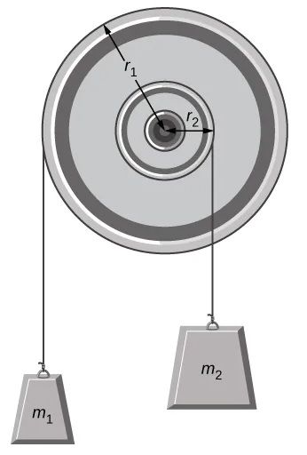
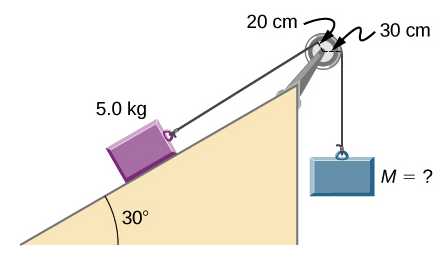
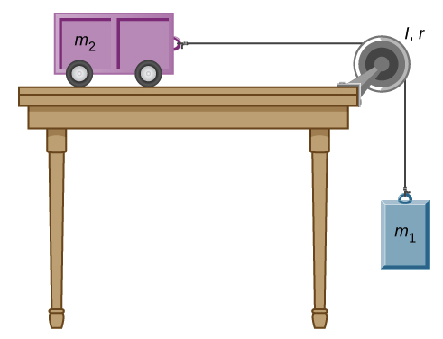
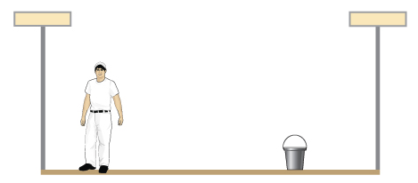
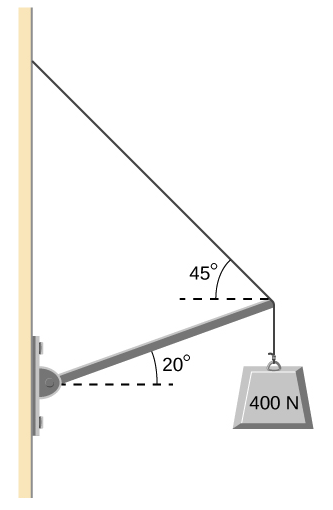

B9.x Problems#
Problem B9.1
A flywheel (I = 50.0 kgm\(^2\)) starting from rest acquires an angular velocity of +200.0 rad/s while subject to a constant torque from a motor for 5.0 s.
What is the angular acceleration of the flywheel?
What is the torque?
This problem is a slightly modified version from OpenStax. Access for free at https://openstax.org/books/university-physics-volume-1/pages/10-problems
# DIY Cell
Problem B9.2
Suppose you exert a force of 180 N tangential to a 0.280 m radius, 75.0 kg grindstone (a solid disk).
What magnitude of the torque is exerted?
What is the magnitude of the angular acceleration assuming negligible opposing friction?
What is the magnitude of the angular acceleration if there is an opposing frictional force of 50.0 N exerted 1.50 cm from the axis?
This problem is a slightly modified version from OpenStax. Access for free at https://openstax.org/books/university-physics-volume-1/pages/10-problems
# DIY Cell
Problem B9.3
A torque of 50.0 Nm is applied to a grinding wheel (I = 20.0 kgm\(^2\)) for 20.0 s.
If it starts from rest, what is the magnitude of the angular velocity of the grinding wheel after the torque is removed?
Through what angle does the wheel move while the torque is applied?
This problem is a slightly modified version from OpenStax. Access for free at https://openstax.org/books/university-physics-volume-1/pages/10-problems
# DIY Cell
Problem B9.4
A uniform cylindrical grinding wheel of mass 50.0 kg and diameter 1.0 m is turned on by an electric motor. The friction in the bearings is negligible.
What torque must be applied to the wheel to bring it from rest to +120.0 rev/min in 20.0 revolutions?
A tool whose coefficient of kinetic friction with the wheel is 0.60 is pressed perpendicularly against the wheel with a force of 40.0 N. What torque must be supplied by the motor to keep the wheel rotating at a constant angular velocity?
This problem is a slightly modified version from OpenStax. Access for free at https://openstax.org/books/university-physics-volume-1/pages/10-problems
# DIY Cell
Problem B9.5
A pulley of moment of inertia 2.0 kgm\(^2\) is mounted on a wall as shown in the following figure. Light strings are wrapped around two circumferences of the pulley and weights are attached. Assume the following data: \(r_1 = 50.0~\textrm{cm}\), \(r_2 = 20.0~\textrm{cm}\), \(m_1 = 1.0~\textrm{kg}\), and \(m_2 = 2.0~\textrm{kg}\), what are
the angular acceleration of the pulley?
the linear acceleration of the weights?

This problem is a slightly modified version from OpenStax. Access for free at https://openstax.org/books/university-physics-volume-1/pages/10-problems
# DIY Cell
Problem B9.6
What hanging mass must be placed on the cord to keep the pulley from rotating (see the following figure)? The mass on the frictionless plane is 5.0 kg. The mass on the plane is connected to a cord that wraps around the pulley’s inner radius of 20.0 cm. The hanging mass is connected to a cord that wraps around the pulley’s outer radius of 30.0 cm.

This problem is a slightly modified version from OpenStax. Access for free
# DIY Cell
Problem B9.7
The cart shown below moves across the table top as the block falls. What is the acceleration of the cart? Neglect friction and assume the following data: \(m_1 = 2.0\) kg, \(m_2 = 4.0\) kg, \(I = 0.4\) kgm\(^2\), \(r = 0.20\) m.

This problem is a slightly modified version from OpenStax. Access for free
# DIY Cell
Problem B9.8
A uniform 40.0 kg scaffold of length 6.0 m is supported by two light cables, as shown below. An 80.0 kg painter stands 1.0 m from the left end of the scaffold, and his painting equipment is 1.5 m from the right end. If the tension in the left cable is twice that in the right cable, find the tensions in the cables and the mass of the equipment.

This problem is a slightly modified version from OpenStax. Access for free
# DIY Cell
Problem B9.9
The uniform boom shown below weighs 700.0 N, and the object hanging from its right end weighs 400.0 N. The boom is supported by a light cable and by a hinge at the wall. Calculate the tension in the cable and the force on the hinge on the boom. Does the force on the hinge act along the boom?

This problem is a slightly modified version from OpenStax. Access for free
# DIY Cell